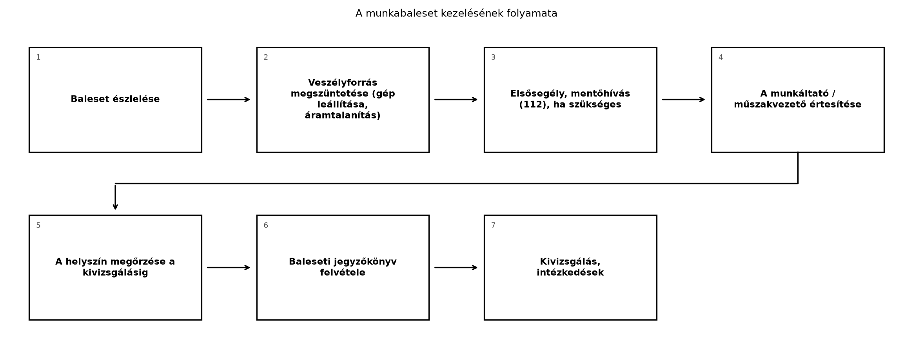

Egy cukrászüzemben hajnali négykor már kevernek, dagasztanak és sütnek. A padlóra liszt szóródik, a kemenceajtó forró, a tepsikből gőz száll, és egy tanuló először fordul meg a műhelyben. Ha ebben a helyzetben csak a receptre figyel, és nem a biztonsági rendre, könnyen megég, megvágja magát, megcsúszik a vizes kövön, vagy rosszul emel meg egy nehéz ládát. A munkavédelem nem papírmunka, hanem életben tartó napi gyakorlat. Ez az alfejezet azt tanítja meg, hogy ki miért felelős, milyen oktatást kell kapnod, és mi történik akkor, ha mégis baleset éri a dolgozót.
Képzeld el, hogy megérkezel a tanműhelybe. A műszakvezető megkérdezi: „Megkaptad a munkavédelmi oktatást? Fel tudod venni a vágásbiztos kesztyűt? Tudod, hol van a vészkijárat?” Ha ezekre igennel tudsz válaszolni, nagyobb biztonságban dolgozol. Az alábbi folyamatábra azt mutatja, milyen sorrendben érdemes kezelni egy munkabalesetet: az észlelés után először a veszélyforrást kell megszüntetni (a gépet leállítani, áramtalanítani, a forró edényt elhárítani), csak utána következik az elsősegély.

A cukrászüzemben a munkavédelmi rendszer célja, hogy a munkavégzés ne károsítsa a dolgozó egészségét, és ne okozzon balesetet. A rendszer csak akkor működik, ha a munkáltató megteremti a feltételeket, a munkavállaló pedig betartja a szabályokat, és jelzi a hibákat.
Definíció. A munkabiztonság a munkavégzés közvetlen baleseti veszélyeinek megelőzésével foglalkozik: például az égés, vágás, csúszás, gépbe nyúlás, áramütés elkerülésével. A munkaegészségügy azokkal a hosszabb távú hatásokkal foglalkozik, amelyek a munkakörülményekből erednek: például por, huzat, nehéz emelés, egyoldalú terhelés, zaj. A kettőt együtt munkavédelemnek nevezzük.
Definíció. A munkabaleset olyan baleset, amely a munkavégzéssel összefüggésben, a szervezett munkavégzés során vagy azzal összefüggésben következik be, és a munkavállaló sérülését, egészségkárosodását vagy halálát okozza (ellenőrizendő: a munkavédelmi törvény szerinti pontos fogalom). Nem munkabaleset például az, ha valaki otthon sérül meg, vagy ha úgy esik el a munkahelyén, hogy az nincs összefüggésben a munkavégzéssel; ezt a munkáltató és a hatóság vizsgálja.
Definíció. Egyéni védőeszköz (EVE) minden olyan eszköz, amelyet a dolgozó visel vagy tart, hogy védje magát egy vagy több kockázattal szemben: például csúszásmentes munkacipő, hőálló kesztyű, vágásbiztos kesztyű, kötény, védőszemüveg, hallásvédő, porvédő maszk. A védőeszköz nem helyettesíti a műszaki védelmet, csak kiegészíti.
Szabály. A munkavédelmi oktatás a munkába állás előtt és a munkakörülmények változásakor kötelező. A tanuló csak olyan gépen dolgozhat, amelynek kezelésére oktatást kapott, és a gyakorlatot felügyelet mellett végezheti. Az oktatást dokumentálni kell: a résztvevők aláírásukkal igazolják, hogy a tájékoztatást megértették.
Jogszabály. A munkavédelemről szóló 1993. évi XCIII. törvény az alapja a magyar munkavédelmi rendszernek. A törvény kimondja: a munkáltató felelős az egészséget nem veszélyeztető és biztonságos munkavégzés feltételeinek megteremtéséért, a kockázatok értékeléséért, a munkavállalók tájékoztatásáért és oktatásáért, valamint a megfelelő védőeszközök biztosításáért. A munkavállaló köteles a munkát a munkavédelmi szabályok szerint végezni, a védőeszközöket rendeltetésszerűen használni, és a veszélyt azonnal jelezni. A törvény részletes előírásai, határidői és hatósági eljárásai évről évre pontosíthatók (ellenőrizendő: hatályos munkavédelmi törvény és végrehajtási rendeletei).
Ezenkívül a cukrászüzemben is alkalmazni kell a tűzvédelmi szabályokat és a gépbiztonsági előírásokat. Ezekről a későbbi alfejezetekben lesz szó, különösen a A cukrászüzem veszélyei: égés, forrázás, vágás, emelés, csúszás, hideg és por és a Gépbiztonság: veszélyforrások, védőberendezések és biztonságos munkavégzés fejezetekben.
A munkáltató legfontosabb kötelességei közé tartozik:
A munkavállaló legfontosabb kötelességei:
Szabály. A munkavállaló megtagadhatja a munkavégzést, ha az saját életét, egészségét, testi épségét közvetlenül és súlyosan veszélyezteti; köteles megtagadni, ha a végrehajtás mások életét, testi épségét vagy egészségét veszélyeztetné (ellenőrizendő: Mt. és Mvt. vonatkozó rendelkezése). A megtagadás nem lehet önkényes: a veszélynek valósnak, közvetlennek és súlyosnak kell lennie. Ha a munkáltató ilyenkor mégis munkavégzésre utasít, a munkavállaló a munkavédelmi hatósághoz fordulhat (ellenőrizendő: a megtagadás jogának és kötelességének pontos feltételei).
Szabály. A cukrásztanuló munkavédelmi oktatásban részesül, mielőtt a műhelyben munkát végez. Az oktatás során elhangzik, hogyan kell biztonságosan használni a tűzhelyet, sütőt, gépeket, késeket, hogyan kell emelni, és hol vannak a vészkijáratok, elsősegélydoboz, tűzoltó készülék. Az oktatást gyakorlati bemutatás követi, és a résztvevő aláírásával igazolja a megértést.
Ellenőrzőlista (oktatási napló kitöltéséhez). A dokumentumnak legalább az alábbi adatokat kell tartalmaznia:
A naplót meg kell őrizni, mert hatósági ellenőrzéskor kérhetik. Ha egy tanuló nem kapott oktatást, akkor nem dolgozhat a gépen; ez nem bürokratikus előírás, hanem a biztonság feltétele.
Definíció. Munkabaleset lehet például az, ha a cukrász megvágja az ujját a késes aprítóban, megégeti a karját a forró karamellal, megcsúszik a vizes kövön, vagy rázuhan egy nehéz tepsi. A munkabalesetet meg kell különböztetni a munkahelyen bekövetkező, de a munkavégzéssel össze nem függő eseményektől.
Szabály. A munkabalesetet haladéktalanul jelenteni kell a munkáltatónak vagy a műszakvezetőnek. A munkáltató minden munkabalesetet köteles kivizsgálni és nyilvántartani, megállapítani az okát, és megtenni a megelőzéshez szükséges intézkedéseket. A súlyos munkabalesetet (például halálos vagy életveszélyes sérülés, végtag elvesztése) azonnal be kell jelenteni a munkavédelmi hatóságnak; a három munkanapnál hosszabb munkaképtelenséget okozó balesetről jegyzőkönyvet kell felvenni, és azt a hatóságnak meg kell küldeni (ellenőrizendő: Mvt. és végrehajtási rendelete, a súlyos munkabaleset jogi fogalma, határidők). A bejelentés nem a munkáltató mérlegelésén múlik.
Ellenőrzőlista: a baleseti jegyzőkönyv tartalma. A jegyzőkönyv munkavédelmi dokumentum, amelyet a cukrászüzemben is ismerni kell.
A hatósági bejelentés nem mérlegelés kérdése: a bejelentési kötelezettséget a jogszabály határozza meg (ellenőrizendő: Mvt. és végrehajtási rendelete). A jegyzőkönyv célja nem a hibáztatás, hanem az okok feltárása és a hasonló balesetek megelőzése.
Példa. Egy cukrászüzemben 15 munkavállaló dolgozik, és az év során 2 munkabaleset történt. Számítsuk ki az ezer munkavállalóra jutó baleseti gyakoriságot. Ez mutatószám, amelyet a munkavédelemben használnak (ellenőrizendő: a hatályos statisztikai módszertan).
Adott: balesetek száma
,
munkavállalók száma
.
Keresett: baleseti gyakoriság
(baleset/1000 fő).
Eredmény: körülbelül 133 baleset jutna ezer munkavállalóra, ha a létszám ezer lenne, és a balesetek aránya ugyanaz maradna. Ez tanulási példa, nem hatósági előírás. A valóságban egy cukrászüzemben a leggyakoribb balesetek a vágás, égés, csúszás.
Második példa. Ha a műhelyben 40 dolgozóval évente átlagosan 4 baleset történik, és intézkedésekkel 50%-kal csökkentjük a balesetek számát, mennyi lesz az új gyakoriság?
Először a jelenlegi gyakoriság: baleset/1000 fő. A csökkentés után a balesetek száma , így a gyakoriság baleset/1000 fő. A feladat célja a képletbe helyettesítés és az arányos gondolkodás gyakorlása; egész balesetszámmal számolunk.
Figyelem. A saját életét közvetlenül és súlyosan veszélyeztető munkát a munkavállaló megtagadhatja; ha a munka mások életét vagy testi épségét veszélyeztetné, köteles megtagadni (ellenőrizendő: Mt. és Mvt. vonatkozó rendelkezése). Ha például a sütő ajtaja kinyílik működés közben, ha a dagasztógép védőrácsa hiányzik, vagy ha a padlóra maró tisztítószer ömlött, a munka nem folytatható. Először áramtalanítani kell a gépet, jelezni a felettesnek, és csak a hiba elhárítása után szabad újra dolgozni.
Tilos. Tilos a munkavégzést azért folytatni, mert „a vendég várja a tortát”, ha közben a munkavállaló egészsége közvetlen veszélyben van. A munkáltató nem utasíthat ilyen munkára, és nem érheti hátrány a dolgozót a jogszerű megtagadás miatt.
Eljárás (oktatási napló kitöltése). Ha tanulóként megkérnek, hogy segíts a műszakvezetőnek kitölteni az oktatási naplót, az alábbi lépéseket követheted:
Figyelem. A dokumentum ne tartalmazzon kitalált adatot. Ha egy oktatás nem történt meg, azt nem szabad igazolni; ez a munkavédelmi szabályok megsértése lehet.
A munkavédelmi rendszer „minőségét” a gyakorlatban az mutatja, hogy a dolgozó biztonságban van-e, és a dokumentumok valósak. Az ellenőrzés szempontjai:
A munkáltató és a tanuló közösen felelős ezért, de a felelősség nem egyenlő arányú: a munkáltató elsősorban a feltételekért, a munkavállaló a szabályok betartásáért.
Egy felnőttképzésben tanuló cukrásztanuló éppen a zselésítő anyagot készítette elő. A forró masszát keverőgéppel keverték, de a gép védőrácsa nem volt felszerelve, mert a gyakorló szerint így könnyebb volt beletölteni az anyagot. A tanuló azonban megégett a kezén, mert a keverőszárból fröccsenő massza a csuklójára került. A balesetet jelentették, elsősegélyben részesült, és a műszakvezető elrendelte a védőrács visszaszerelését és ismételt oktatást. Tanulság: a munkavédelmi szabály nem akadály, hanem véd a fájdalomtól és a súlyosabb sérüléstől.
Önellenőrzés – válaszok:
1. feladat (A)
Fogalmazd meg egy mondatban, mi a különbség a munkabiztonság és a
munkaegészségügy között!
2. feladat (A)
Egy cukrászüzemben 12 dolgozó van, és egy évben 3 munkabaleset történt.
Számítsd ki az ezer munkavállalóra jutó baleseti gyakoriságot! (A
képlet:
.)
3. feladat (B)
Egy tanuló a következő baleseti jegyzőkönyv-bejegyzést írta: „A
munkavállaló megcsúszott a konyhában.” Mi hiányzik ebből a leírásból?
Egészítsd ki legalább öt adattal, amelyet a jegyzőkönyvnek tartalmaznia
kell!
4. feladat (B)
Töltsd ki az alábbi oktatási napló részletét a megadott adatokkal:
munkáltató: „Minta Cukrászda Kft.”, oktatás: 2025. szeptember 1., téma:
„Gépi keverés, vágásbiztos kesztyű használata”, résztvevő: „Nagy Péter
tanuló”. Írd be a hiányzó mezőket: dátum, téma, résztvevő, oktató
aláírása. Miért fontos az oktató aláírása?
5. feladat (C)
Egy cukrászüzemben a tanuló azt veszi észre, hogy a dagasztógép
védőrácsa nincs felszerelve. A műszakvezető azt mondja, hogy „ma gyorsan
kell dolgozni, ne vacakolj a ráccsal”. Mit tegyen a tanuló? Indokold a
munkavédelmi törvény ismeretében!
6. feladat (D)
Készíts el egy rövid munkavédelmi oktatási forgatókönyvet a
cukrászműhely tanulói számára, amely legalább öt témát tartalmaz. A
forgatókönyvben szerepeljen: cél, az oktatás hossza, a résztvevők köre,
a bemutatandó védőeszközök, és egy ellenőrző kérdéssor. Kérd ki a
gyakorlati helyen dolgozó oktató véleményét, és javítsd a tervet.
1. feladat (A)
A munkabiztonság a közvetlen baleseti veszélyeket (vágás, égés, csúszás,
gépbe nyúlás) előzi meg, a munkaegészségügy pedig a hosszabb távú
egészségkárosító hatásokkal (por, huzat, nehéz emelés, zaj)
foglalkozik.
2. feladat (A)
Adott: balesetek
,
dolgozók
.
.
Eredmény: 250 baleset jutna ezer munkavállalóra. Ellenőrzés: a 3/12 =
0,25, ami százalékban 25%, ezerre vetítve 250.
3. feladat (B)
Hiányzik például: a sérült neve és beosztása, a baleset pontos ideje és
helye, a sérülés jellege, a szemtanúk neve, az elsősegélynyújtás módja,
a munkáltató intézkedései, az aláírások.
4. feladat (B)
A kitöltött naplóban:
Dátum: 2025. szeptember 1.
Téma: Gépi keverés, vágásbiztos kesztyű használata
Résztvevő: Nagy Péter tanuló
Oktató: (be kell írni az oktató nevét)
Az oktató aláírása bizonyítja, hogy az oktatás megtörtént, és a
résztvevő megkapta a tájékoztatást. Aláírás nélkül a napló nem
hiteles.
5. feladat (C)
A tanulónak meg kell tagadnia a munkavégzést a dagasztógépen (a saját
épsége miatt élhet a megtagadás jogával, a gép mellett dolgozó társak
épsége miatt pedig a jelzés kötelessége is fennáll), mert a hiányzó
védőrács közvetlen és súlyos veszélyt jelent (például a kéz beszorulhat,
a keverőszár elkaphatja a ruhát). Jeleznie kell a munkáltatónak vagy a
felettesnek, és a munkát csak a rács visszaszerelése után folytathatja.
A munkavédelmi törvény védi a jogszerű megtagadást, nem érheti
hátrány.
6. feladat (D)
A megoldás egyéni; a feladat célja a munkavédelmi ismeretek
rendszerezése. A forgatókönyvnek tartalmaznia kell a gépek biztonságos
kezelését, a vágásbiztos kesztyű használatát, a forró anyagok kezelését,
a csúszásveszély megelőzését, a menekülési útvonalakat és a
balesetbejelentést. Ellenőrző kérdések: „Mikor használsz hőálló
kesztyűt?”, „Mit teszel, ha a padlóra olaj ömlik?”, „Hol van a
vészkijárat?”, „Mikor kötelező a munkavégzést megtagadni?”.
A munkavédelem a cukrászüzem minden dolgozójának védelmét szolgálja. A munkáltató felelős a biztonságos munkakörülményekért, a kockázatértékelésért, a védőeszközökért és a munkavédelmi oktatásért. A munkavállaló köteles az oktatáson részt venni, a védőeszközöket használni, a gépeket biztonságosan kezelni, a veszélyt jelezni, és a munkát megtagadni, ha az mások életét közvetlenül veszélyeztetné (a saját életét közvetlenül és súlyosan veszélyeztető munkát megtagadhatja; ellenőrizendő: Mt. és Mvt.). A munkabalesetet mindig jelenteni kell, jegyzőkönyvben rögzíteni, és a súlyos esetet azonnal a hatósághoz bejelenteni (ellenőrizendő: pontos határidők). Az oktatási napló és a baleseti jegyzőkönyv kitöltése a napi gyakorlat része; hiányos dokumentum esetén a felelősség nehezen megállapítható. A munkavédelmi oktatás és a baleseti jegyzőkönyv ismerete a A cukrászüzem veszélyei: égés, forrázás, vágás, emelés, csúszás, hideg és por és a Gépbiztonság: veszélyforrások, védőberendezések és biztonságos munkavégzés alfejezetekben épül tovább, különösen a gépkezelési szabályok és a gyakorlati útmutatók során.